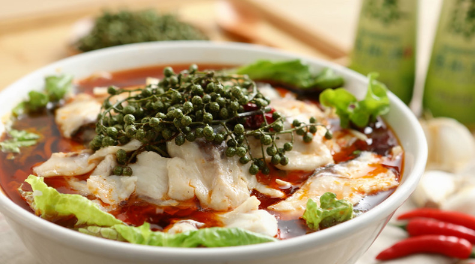
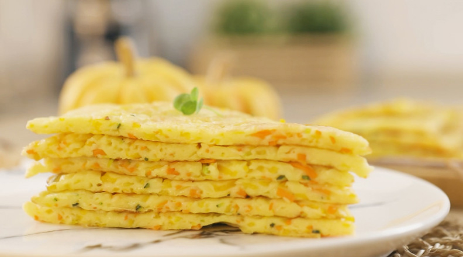
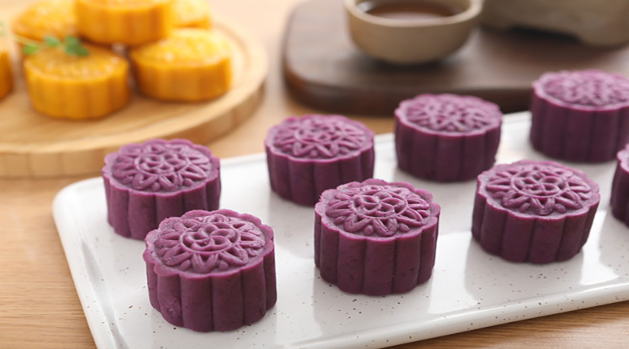

Kristy's Kreative Kitchen
Boiled Fish
Pumpkin Pancake
Purple Cake



| Ingredients |
Quantity |
Purchase |
| Fish |
12oz |
$6.74 |
| Egg |
1 |
$0.50 |
| Lettuce |
100g |
$4.49 |
| Bean sprouts |
200g |
$2.96 |
| Ingredients |
Quantity |
Purchase |
| Purple Potato |
2 |
$5.79 |
| Egg |
4 |
$2.00 |
| Pumpkin |
200g |
$5.29 |
| Red Bean |
250g |
$2.99 |
- Wash the fish fillets. Add 3 tablespoons of salt, cooking wine and egg.
- Cook(Boiled) the bean sprouts and lettuce and place in a large bowl.
- Fill the pan with fish fillets, boiled 3 minites.
- Remove the cooked fish fillets and put them in a large bowl.
- Add the base oil into pan to heat. Add the garlic, green onion, dried chili, bean paste and water.
- Hot soup drenched in a fish fillet bowl and enjoy.
- Sift flour, salt and egg, together in a bowl.
- Whisk water, pumpkin strips, and carrot strips together in the flour mixture bowl.
- Heat a lightly oiled griddle over medium-high heat to 350 degrees F.
- Pour the vegetable batter and spread evenly with a spoon.
- Fry for 3-4 minutes, until the color of the fried cake is yellow.
- Cut the pancake into pieces and enjoy.
- Whisk milk, egg, sugar, flour, butter, in the bowl.
- Stir them while cooking, stir until concentrated.
- Steamed purple potato for 15 minutes, then pressed it into purple potato puree for use.
- Put the purple potato puree and milky yellow stuffing into a 25g round.
- Put the purple potato puree flat. Wrapped in milky yellow filling.
- Put into the mooncake mold and gently squeeze out and enjoy.